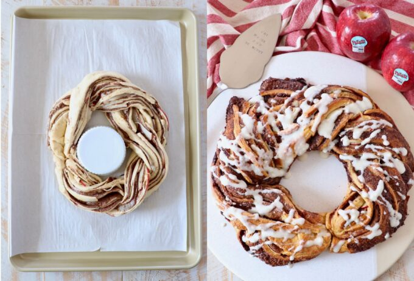

Ingredients you’ll need

- Crescent roll dough: You can use canned crescent roll dough, or sheets of canned crescent dough. Either will work, the sheets of dough are simply a little easier to work with because you don’t need to press the crescent roll perforations together.
- Granulated sugar
- Brown sugar
- Ground cinnamon
- Unsalted butter: You’ll want the butter and cream cheese softened prior to making the recipe, so I recommend removing them from the refrigerator at least 30 minutes before starting the recipe, so they can come up to room temperature.
- Pazazz apples: Sweet, tart and extra crispy apples.
- Cream cheese
- Milk
- Vanilla extract
- Powdered sugar
Preparation & Result

Shaping the wreath and baking to golden brown

Ready to serve with fresh glaze and apples
Step by step instructions

Roll out the crescent roll dough
Place a large piece of parchment paper on a flat work surface. Place both sheets of crescent roll dough slightly overlapping on the parchment paper and press the seams together to form one large crescent roll rectangle.
Top with the cinnamon sugar butter
In a medium bowl, combine softened butter with granulated sugar, brown sugar and ground cinnamon. Spread this mixture evenly across the crescent roll dough.
Add the apples
Core and thinly slice one Pazazz apple, then place the slices on top of the cinnamon sugar butter in an even layer, not overlapping. Overlapping the apples will make it difficult to roll up and form into the wreath.
Roll it up
Roll the crescent roll dough up tightly over the apples and the cinnamon sugar butter into a tube.
Slice it in half
Use a sharp knife to slice lengthwise through the middle of the cinnamon roll tube.
Separate the two halves
Once you’ve sliced the cinnamon roll tube in half, separate the two halves, and make sure the cinnamon butter and apples are facing up on both halves.
Braid them together
Carefully braid the two halves together, lifting one half over the other, then vice versa until it’s rolled up into one long braid.
Form the wreath
Bring the two ends of the braid together to form the wreath, then transfer the wreath on the parchment paper over to a baking sheet. Bake at 350°F for 20-25 minutes, or until the entire cinnamon roll wreath is golden brown.